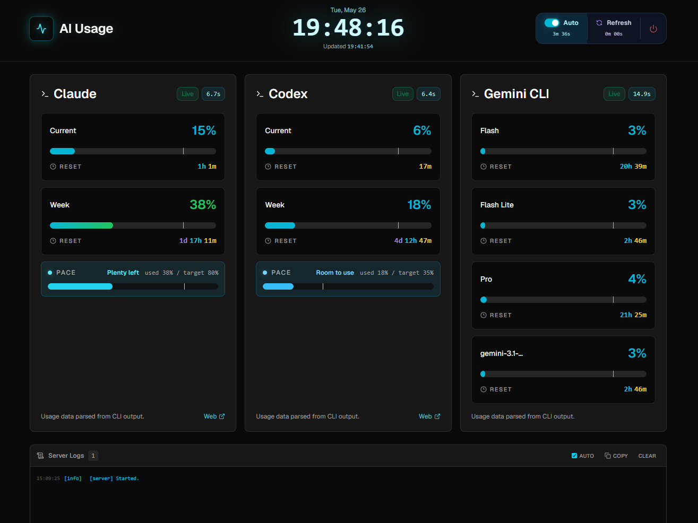

Monitor Claude, Codex, and Gemini CLI in one local dashboard. Real-time collection, smart retry, and live server logs — running entirely on your machine.

For developers running multiple AI CLIs locally. No accounts, no API keys, no data leaving your machine.
Runs Claude /usage, Codex /status, and Gemini /model in virtual terminals — no API keys needed.
Up to 5 attempts per provider with phase diagnostics. Re-enters slash commands automatically if they disappear mid-session.
Compare your actual usage bar against a 20% minimum threshold marker to stay on track throughout the week.
Live per-provider countdown to the next usage reset — always know how much runway you have left.
SSE-based real-time log panel via /api/server/logs. Streams directly to the browser, no polling required.
Server-side JSON history in 10-minute buckets plus browser localStorage fallback for instant first paint.
One-liner installs, clones, and optionally launches the dashboard. Or run manually.
irm https://raw.githubusercontent.com/savvy773/ai_usage/main/scripts/install.ps1 | iex# clone & install
git clone https://github.com/savvy773/ai_usage.git
cd ai_usage
pnpm install
# start dashboard
.\scripts\start-server.ps1 -Openstart-server.ps1 -Open
# open browser automatically
start-server.ps1 -Port 5173
# use a custom port
start-server.ps1 -Mode preview
# production preview build
start-server.ps1 -Status
# show server statusMinimal runtime dependencies. SvelteKit handles the heavy lifting — the browser just renders.